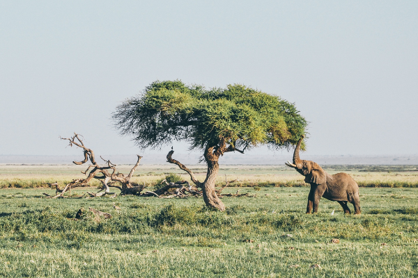

Our Goal
We protect animals and stop cruelty worldwide.
Our History
Friends of Animals was founded in 1957 to end pet homelessness by helping to make spaying and neutering more affordable through our low-cost spay/neuter certificates. Our certificates have helped alter more than 2.8 million dogs and cats.
There is no debate about the fact that spay/neuter helps combat the single largest killer of dogs and cats—overpopulation and euthanasia of unwanted, homeless animals.
The Association of Shelter Veterinarians (ASV) has identified being sexually intact as the leading risk factor for owner relinquishment of cats and dogs; therefore, neutering prior to adoption is likely to improve the odds that adopted animals will be retained in their homes.
In the 70s, overflowing animal shelters euthanized millions of animals. Our work has helped bring this number down. Now, it is estimated that the number of cats and dogs euthanized in U.S. shelters annually has declined from approximately 2.6 million in 2011 to 355,000 in 2021, according to Best Friends Animal Society.
There are few greater joys than bringing a cat or dog into your home, and heart. With this joy comes the commitment to provide your new family member with the comforts and necessities needed for a healthy and content life. Spaying or neutering your animal is one of these necessities.
About Us
FoA has been a leading figure in the movement to end the exploitation of fur-bearing animals. FoA’s investigators produced the first ever footage of the shocking reality of life and death on a U.S. fur farm. Stark images of minks’ necks being broken stunned the audience of 60 Minutes and galvanized support for the anti-fur movement. Every fall, FoA launches a new campaign to encourage people to pass up fur garments and build an ethical wardrobe. FoA is currently leading the effort to ban fur sales in New York City.
We oppose hunting and animal-killing contests. FoA was one of the first international advocacy organizations to challenge the long-held belief that regulated hunting can be a valuable conservation tool for endangered animals. We educate the public that killing is not conservation—protection of habitat and reintroduction of threatened and endangered species is. When faced with the question of right and wrong, many hunting apologists resort to manipulated statistics and far-fetched theories and pseudo-science to justify killing. FoA publishes research that refutes the arguments such as “controlling overpopulation.” We also challenge specific hunts—we have successfully thwarted a number of hunting proposals, most recently a bear hunt Connecticut. We have advocated for legislation to make wildlife killing contests illegal in the state of New York. (California was the first state to enact a ban in 2014.) In addition, we are working towards ending the importation into the U.S. of the trophies of Africa’s Big 5—elephants, leopards, lions and black and white rhinos and giraffes.
We oppose the roundups of wild horses on federal public lands and forcibly drugging them with fertility control. The U.S. Bureau of Land Management’s approach to managing public lands—with its primary emphasis on catering to the cattle and sheep ranchers—is detrimental to the survival of wild horses. Tens of thousands of horses have been removed from public lands in recent years to appease ranchers, with many horses being killed in the process. Despite years pushing BLM to better protect these animals under the Wild Free-roaming Wild Horses and Burro Act (WHBA), America’s wild horses are more endangered today than they were when that law was passed in 1971. The good news is that in the last few years, Friends of Animals has won 12 victories for wild horses, ensuring that wild horse herd families are not ripped apart, continue to roam free and have the right to flourish in their own way on public lands. Friends of Animals is widely regarded as the leading national animal organization working on behalf of one of our nation’s greatest national treasures—wild horses.
We oppose predator control. Predators need not be controlled, but some government agencies do. The highly secretive arm of the U.S. Department of Animal Agriculture known as Wildlife Services killed more than 2.2 million animals in 2019 at the behest of special interest groups like ranchers, who portray the animals as pests. These agencies are dependent on licensed hunters for part of their budgets so they don’t take into consideration the majority of the country’s population who are non-hunters. The multimillion-dollar federal wildlife-killing program targets wolves, coyotes, cougars, birds and other wild animals for destruction. Of the 2.2 million animals killed in 2019, approximately 1.2 million were native wildlife species.
We believe that humans are the most overpopulated species on the planet. Period. Friends of Animals works to address this sensitive topic, which is at the heart of much animal exploitation. To be clear, we are not anti-children; we are pro family planning, pro contraception for humans and pro taking a rational approach to leading a fulfilling life, which can be found whether we choose to have children or not.
We oppose the use of animals for human consumption. Campaigns to make the public believe that the grisly business of turning fish, birds and mammals into food can be done in a “humane” fashion send the wrong message. Whether nonhuman animals are reared intensively or “free-range,” their lives are completely controlled, and profit is what matters most to those who own them. Ostensible improvements pushed by some welfare-oriented animal advocacy groups do not alleviate the animals’ suffering; they are geared to assuage our own consciences so that people continue to eat animals, thinking that somebody else has addressed the morality issue. While we know adopting a vegan diet and lifestyle is not the cure for all our planet’s woes, it is one of the most effective ways to combat the atrocities that are waged against animals all over the world as well as climate change. We produce vegan cookbooks, vegan starter guides and give talks around the country.
We believe in establishing recognition of a right to ethical consideration for all animals. The goal of our Right to Ethical Consideration Project is to establish standing for non-human animals in the eyes of the law. Legal standing, by definition, is a person’s right or ability to sue. Unfortunately for non-human animals—currently to have standing you must be a “person,” although, shockingly some corporations even have legal personhood status. We believe the basis for determining personhood should be the ability of an animal to lead a meaningful life and flourish in his or her own way, and even enrich the lives of other animals around him or her.
